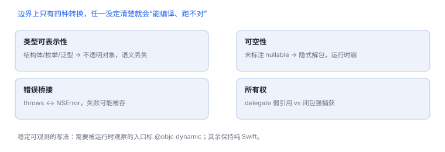

互操作与框架边界
跨语言边界的四种转换，决定了哪些方法“看得见、hook 得着”
Objective-C 与 Swift 的互操作不是自动的：类型能不能表示、可空性怎么标、错误怎么桥接、对象归谁持有，四件事任何一件没定清楚，边界上就会出现“能编译、跑不对、hook 不到”的问题。
1. 四种转换
| 转换 | Swift 侧 | ObjC 侧 | 常见问题 |
|---|---|---|---|
| 类型可表示性 | Struct/Enum/泛型 | 无直接对应 | 暴露后变成不透明对象，参数语义丢失 |
| 可空性 | String? | nullable / nonnull | 未标注时桥接成隐式解包，运行时崩 |
| 错误 | throws | NSError ** | 失败被吞，或错误码丢失 |
| 所有权 | 强引用/闭包捕获 | delegate（弱引用） | 双向强引用、回调时对象已释放 |
2. 暴露的代价
| 写法 | 派发方式 | 能否被运行时 hook |
|---|---|---|
| 纯 Swift 方法 | 静态或虚表 | 不能按选择子 |
@objc | 消息发送 | 能 |
@objc dynamic | 消息发送，禁止内联/去虚化 | 能，且稳定 |
@objcMembers | 整类成员暴露 | 能，但暴露面变大 |
确认某个 Swift 方法是否暴露给运行时
nm -gU YourApp | grep -i "loginService" | head
nm -gU YourApp | awk '{print $3}' | xcrun swift-demangle | grep -i LoginService | head
3. 回调与线程
- Objective-C block 与 Swift closure 可以桥接，但
@escaping与捕获列表的语义不自动对齐。 - 跨边界回调要写清“在哪个队列执行”，否则调用方会在错误线程改 UI。
- 用协议回调时，delegate 通常弱引用；用闭包时容易强捕获，形成环。
4. 边界上的观测
| 现象 | 原因 | 查哪里 |
|---|---|---|
unrecognized selector | 方法未暴露，或被改名 | @objc 与选择子 |
| 参数为 nil 崩溃 | 可空性未标注 | 头文件/接口标注 |
| 错误码总是 0 | 错误桥接丢失 | 返回路径与 NSError |
| 回调后崩溃 | 对象已释放或线程错误 | 所有权与队列 |
5. 设计建议
- 边界上只用简单、可表示的类型：字符串、数字、数组、明确的模型对象。
- 需要被运行时观察的入口标
@objc dynamic，其余保持纯 Swift。 - 回调明确执行队列与生命周期，文档写“谁持有谁”。
- 为边界写一组测试：nil、错误、取消、跨线程。
稳定可 hook 的写法
需要被运行时观察的入口标
需要被运行时观察的入口标
@objc dynamic；只标 @objc 仍可能被内联或去虚化。6. 一次真实排查记录：unrecognized selector
- 现象：Objective-C 侧调用 Swift 方法，运行时报找不到选择子。
- 先看暴露：方法是否标了
@objc，类是否继承自 NSObject。 - 再看命名：Swift 方法转成选择子时会重排参数标签。
- 验证：枚举方法列表核对实际选择子。
- 结论与限制：记录“未暴露或选择子不匹配”，并注明结论只对该声明方式成立。
7. 自测
- 为什么泛型类型跨到 Objective-C 后会“看起来能用但语义丢失”？
@objc与@objc dynamic在可 hook 性上差在哪？- 闭包回调相比 delegate 更容易产生哪类问题？